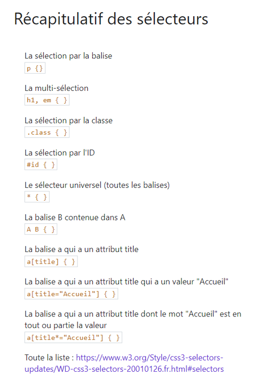
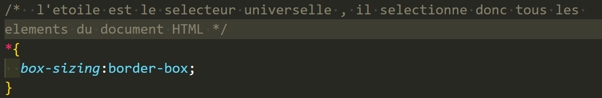
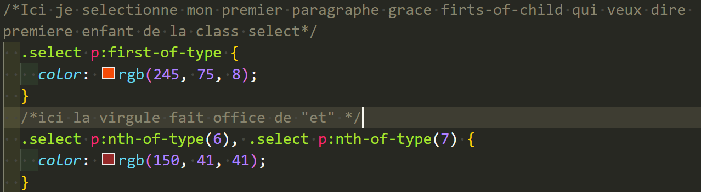

LES SELECTEURS
Mettre du style avec le CSS
Pour commencer il nous faudra creer un dossier, nommer css pour plus de clareté mais rien ne vous y oblige, qui contiendras tout vos fichiers avec extenssion.css
Creér également un fichier que je nomme style.css pour exemple mais pas d'obligation de nommage ici hormis l'extenssion .css qui precise le type de fichier.
Maintenant nous devons donner accés a notre page, à notre navigateur, pour ce faire il faut ajouter la balise autofermantes link dans votre balise head.(Exemple concret dans le head de cette page vous retrouverez le link )
Le selecteur étoile
A mettre tout en haut de mon fichier css: *{ box-sizing:border-box; }
Cela permet d'ajuster les élèments sans modifier la largeur est la hauteur definit.
Comment faire un commentaire en css
Il suffit de mettre le slahs suivi d'une étoile pour ouvrir le commentaire,mettre vos anotations, puis étoile slash pour le fermer(exemple concret dans votre fichiers css)
Maintenant jouons avec les selecteurs CLASS et ID
Pour selectionner uniquement mon logo je lui ai mis un id qui est toujours un identifiant unique ,il ne peut donc en avoir qu'un seul.
Il faudras ajouter l'attribut id="nom choisit" pour html est en css il faut lappeler avec le ashtag #suivit du nom de l'ID.
Maintenant si on veux selectionner certains elément il suffira d ajouter une class="select" a nos sections en css on l'appelera a laide d un point devant le nom de la class.
3em p de cette section
4em p de cette section
5em paragraphe de cette section a était selectionner grace a la l'élément parent section de class select qui est appeler en css al'aide d'un point devant le nom de la class.
6em p de cette section recuperer garce au selecteur nth-of-type Le sélecteur :nth-of-type (“n-ième du type”) vous permet de sélectionner un ou plusieurs éléments en fonction de leur ordre dans la source et selon des critères que vous déterminez.
LES PROPRIETES CSS
Dans ce cours nous verrons les propieter essentiel qui nous permette de modifier notre site a notre bon vouloir ou selon la charte etablie avec votre client
Je vous donne également un liens vous permettant de voir toutes les proprietées existante ainsi que leur valeurs en css.
Voici un lien sûre ou vous trouverez toutes les proprietés CSS ainsi que leur valeurs associes:Selecteur CSS3